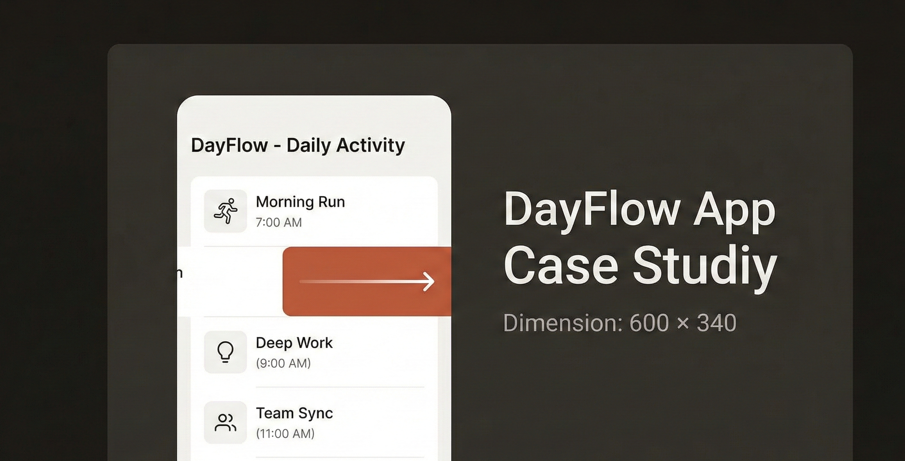
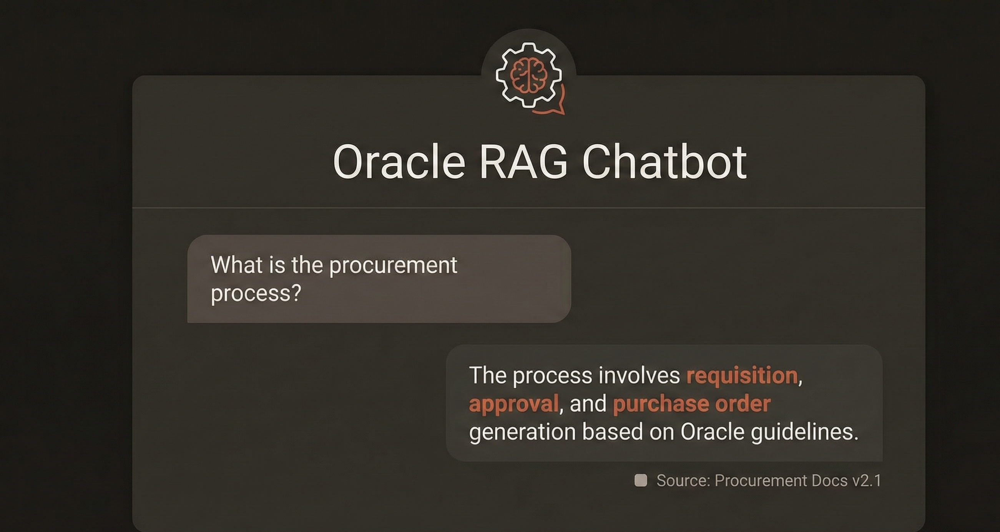

02. Featured Work



GenAI Test Script Generator
IBM
IBM AI Project
AI agent that generates Oracle Fusion test scripts from RTM templates, reducing creation time from days to minutes.
- IBM Granite
- Llama
- Oracle Fusion
Oracle Expenses & Procurement
IBM
IBM Enterprise Project
Global Oracle Fusion implementation: Expenses for 72 business units with China Fapiao integration, and Amazon Punchout catalog across 20 regions.
- Oracle Fusion
- CXML
- Alibaba API
- Punchout